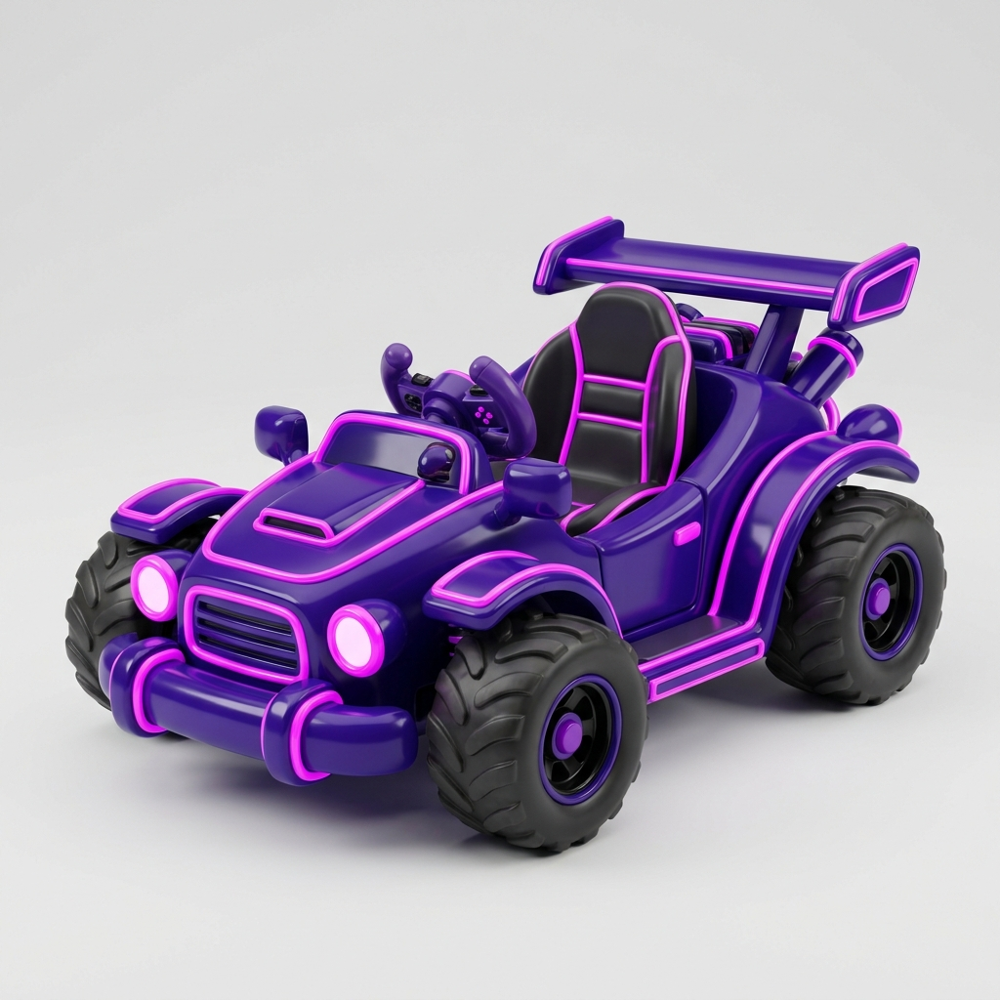
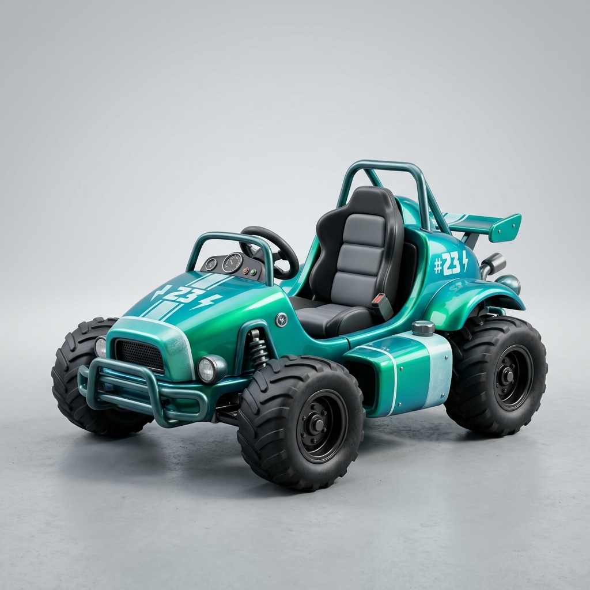

K8 kart-seat re-roll — replaces the 3 rejected K5 seats
Pick up to 3. Picked seats get meshy-lifted (30cr each) — say e.g. "lift synthwave, midnight, ember".
All compact + low-slung per your K5 call; zero gold.

1 · synthwave-royal — royal purple, magenta neon trim

2 · aurora-runner — teal/emerald aurora ⚠ carries a "#23" livery (clashes with Layer 23) — re-rollable